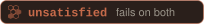

What a pull request or branch carries once Oxagen has looked at it. The word on the badge is the word the record holds: the witness verdict (spec §8.5, a closed vocabulary) or the attestation the chain carries (§8.3). It never shows a stronger word than the record. One SVG per state and theme, built by tools/build-badges.mjs.
| Badge · light, dark | File | Asked for as | What the record holds |
|---|---|---|---|
verifying | VERIFYING | §8.5 · the witness runs on the target, then on the PR head; only pass or fail comes back | |
proven | SUCCESSFUL VERIFICATION | §8.5 · verdict flipped: the witness failed on the target and passed on the PR head; the only verdict that proves a run | |
failing | FAILED VERIFICATION | §8.5 · verdict failing: the witness fails on the PR head | |
unmoved | no request; spec state | §8.5 · verdict unmoved: the witness passes on target and head, so it proves nothing about the change | |
 |
unsatisfied | no request; spec state | §8.5 · verdict unsatisfied: the witness fails on target and head |
tampered | TAMPERED | §8.5 · verdict tampered: the tamper exclusion tripped; the worker reached the witness or its environment | |
unverified | no request; spec state | §8.5 · verdict unverified: the runner could not reach a conclusion; never resolved by a model | |
waived | no request; spec state | §8.5 · verdict waived: nothing changed and nothing tried, per policy | |
attested | VERIFIED | §8.3 · chain intact and the run attestation verifies; gateway-observed frames are Oxagen-attested | |
client-attested | UNVERIFIED - ATTESTATION | §8.3 · producer-signed, Oxagen-countersigned at ingest: Oxagen attests receipt and chain integrity, not the truth of the content | |
chain-break | UNVERIFIED - TAMPERED | §8.3 · the same seq with a different hash, or a gap that is not a telemetry_gap frame; refused and reported as a security incident |
GitHub picks the theme with <picture>. Both files are committed; nothing is fetched at render time.
<picture> <source media="(prefers-color-scheme: dark)" srcset="badges/proven-dark.svg"> <img alt="Oxagen: proven · fail → pass" src="badges/proven-light.svg"> </picture>